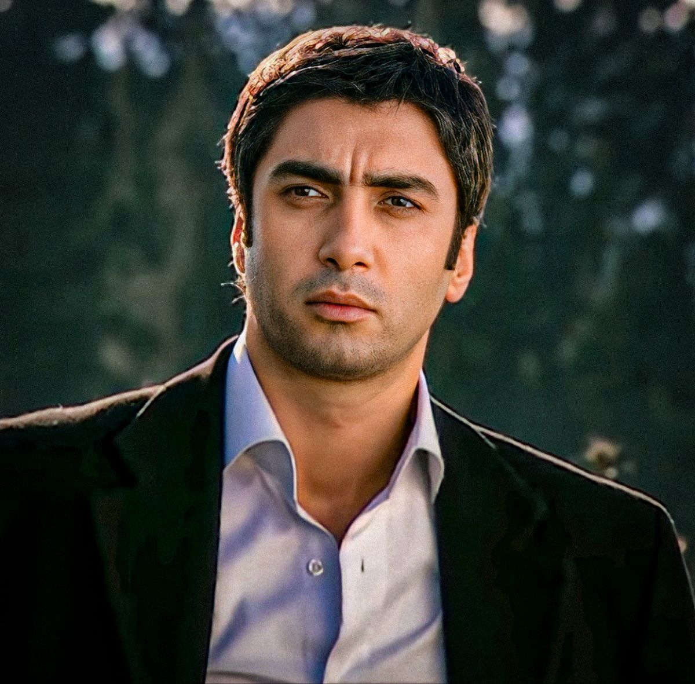
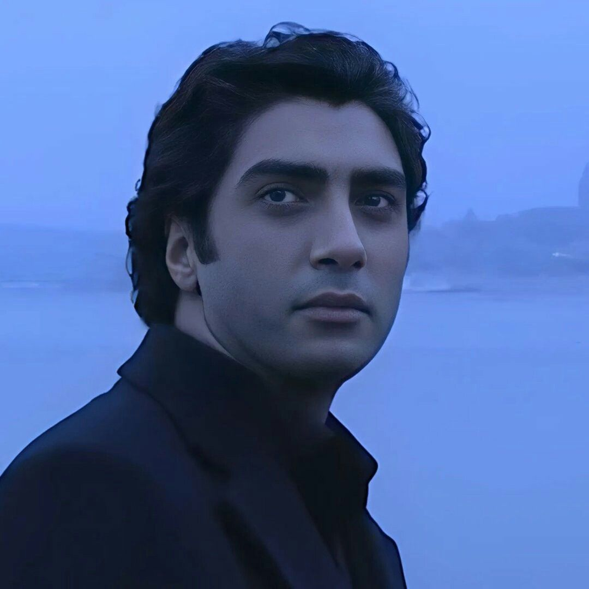

The lone wolf of Istanbul. A man who walked into the fire of the underworld so the nation could sleep. A legend written in shadow, blood, and silence.

Once Ali Candan — a young intelligence operative — he gave up his face, his name, and his life to become someone else. Polat Alemdar was forged in the back rooms of Istanbul's mafia, where every handshake carried a knife.
He doesn't fight for thrones. He fights for the silent ones — the orphans, the betrayed, the homeland. A wolf among wolves, but never one of them.
To brothers, to nation, to the silent dead. Betrayal is the only unforgivable sin.
A word given is a debt of blood. A name carried is a weight of fire.
Patient. Precise. Inevitable. The wolf does not forget — and never forgives.
Polat Alemdar enters the underworld of Istanbul, infiltrating the mafia from within.
The blockbuster film takes the wolf beyond borders into the shadows of war.
A new chapter — deeper conspiracies, darker enemies, the same lone wolf.
Polat carries the fight to the Mediterranean, becoming a symbol across nations.
The legend returns — older, scarred, and still hunting.
"Bu dünyada iki türlü insan vardır: Kurtlar ve kuzular.
— In this world there are two kinds of men: wolves and lambs.
"Devlet adamı olmak, baba olmaktır.
— To be a man of the state is to be a father.
"Sözüm söz, namusum namus.
— My word is my word. My honor is my honor.